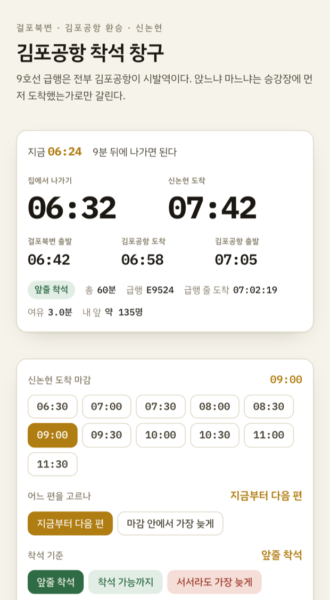
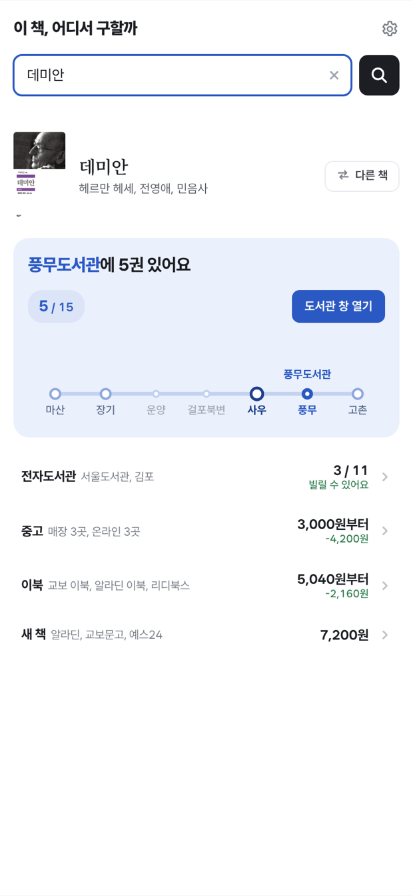

그림 속 앱에도 둥근 모서리와 바깥 여백이 있고, 카드 썸네일도 둥근 테두리(8px)를 두른다. 두 겹이 겹치면 귀퉁이에 애매한 띠가 남는다.
왼쪽은 실제 크기 썸네일, 오른쪽은 왼쪽 위 귀퉁이를 4배로 확대한 것. 그림은 김포공항 착석 웹 판(바깥 여백이 넓은 쪽)과 책 구하기 첫 화면.
지금 — 그대로
그림이 앱 바깥 여백까지 담고 있어, 테두리 안쪽에 그 바탕색이 한 겹 더 보인다.


남는 것 둥근 테두리 → 앱 바깥 여백 → 앱 카드의 둥근 모서리. 세 겹이 한 귀퉁이에 모인다.
A — 여백을 잘라 내용이 모서리까지 차게
그림에서 앱 바깥 여백을 걷어내면 테두리 안쪽이 내용으로 찬다. 여기서는 확대로 흉내 냈고, 실제로는 찍을 때 잘라낸다.
얻는 것 겹이 하나 준다. 잃는 것 앱마다 여백이 달라 그림마다 따로 재야 하고, 화면 가장자리 요소가 잘릴 수 있다.
B — 썸네일에서 테두리와 모서리를 뺀다
그림이 이미 제 테두리를 갖고 있으니 사이트는 얹지 않는다. 그림자만 남긴다.
얻는 것 겹이 없다. 잃는 것 바탕이 흰 그림은 카드와 경계가 사라져 어디까지가 화면인지 안 보인다 — 오른쪽 book-hunt 가 그렇다.
C — 찍을 때 앱의 둥근 모서리를 편다
캡처 직전에 그 요소의 border-radius 를 0 으로 둔다. 그림은 꽉 찬 사각이 되고 사이트 테두리가 그대로 깎는다. 중고 상세에 이미 적용했다.
얻는 것 겹이 없고 경계도 남는다. 되는 자리 내가 브라우저로 찍는 화면만 — 안드로이드 앱 스크린샷에는 못 쓴다.
고르는 축
브라우저로 찍는 화면은 C 가 가장 깨끗하다. 폰 스크린샷처럼 이미 받아 둔 그림에는 A 나 B 가 남는다.